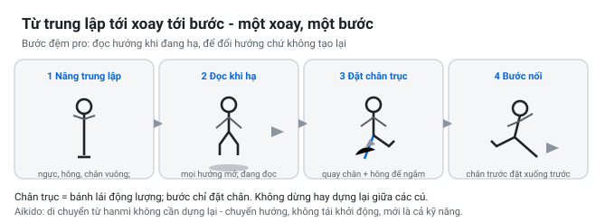
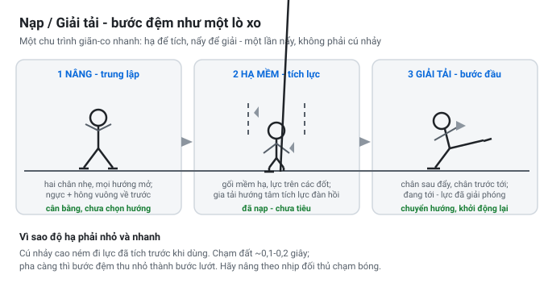
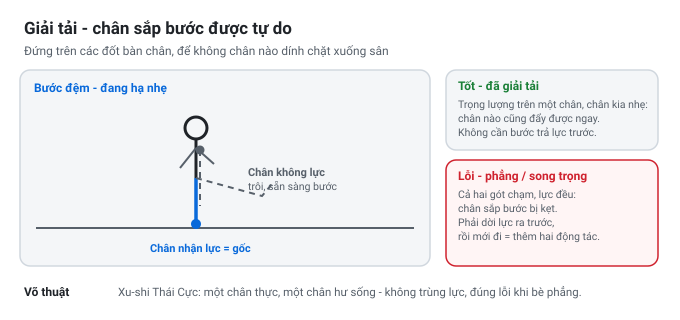

Bước Đệm (Split Step): Nạp, Giải Tải, Chuyển Hướng
Luận điểm cốt lõi trong một câu: Bước đệm là cơ thể quần vợt thực hiện ba việc cùng một lúc — nạp rồi giải tải đôi chân thông qua một lò xo đàn hồi có kiểm soát, xả tải (unweight) bàn chân sắp bước để chân ấy tự do di chuyển, và thực hiện tất cả những điều này khi vẫn duy trì thăng bằng động trên một bệ đỡ trung lập, giúp bạn đổi hướng ngay tức khắc khi vừa đọc được đường bóng. Mọi khái niệm võ thuật gọi là hư thực (xu-shi), "đầu gối mềm", cuộn-phát phát kình (fa-jin), hay tính trung lập của thế hanmi thực chất đều là một hiện tượng cơ sinh học mang những lớp áo khác nhau.

Bản Chất Thực Sự Của Bước Đệm
Hai thao tác hoàn toàn khác nhau cùng được gọi là "bước đệm" (split step), và sự khác biệt giữa chúng chính là cốt lõi của toàn bộ câu chuyện bộ pháp:
- Bước đệm ngây thơ (The Naïve Split Step): Đây là điều phần lớn người chơi phong trào được dạy — nhảy thẳng đứng lên rồi rơi thẳng xuống với cả hai bàn chân chạm đất cùng một lúc, tiếp đất bẹp và phẳng. Từ tư thế chết đó, bạn buộc phải nhấc một bàn chân lên, xoay mũi chân làm trụ, rồi mới bắt đầu lao đi. Mỗi cú đánh do đó phải trả giá bằng 3 chuỗi hành động tuần tự riêng biệt: hạ xuống → chọn chân → xuất phát. Đó là lý do chuyển động luôn bị cảm giác muộn màng, nặng nề và gượng gạo.
- Bước đệm nhà nghề (The Pro Split Step — Federer, Djokovic): Khi đối thủ bắt đầu vung vợt đánh bóng, bạn nâng người lên một bệ đỡ trung lập (neutral platform) — ngực, hông và hai mũi bàn chân hướng thẳng về phía trước để có thể bứt đi bất kỳ hướng nào. Sau đó, ngay trên đường rơi xuống, trước khi hai chân kịp chạm hoàn toàn xuống mặt sân, mắt bạn đã đọc xong hướng bóng. Bàn chân không làm trụ (non-pivot foot) không bao giờ chạm bẹp xuống đất; nó lướt nhẹ (floats) trên mặt sân trong khi bàn chân làm trụ (pivot foot) tiếp đất trước để nhận trách nhiệm bẻ hướng đà quán tính. Khẩu quyết kinh điển: "Chỉ cần nâng, đọc, cắm trụ và lướt đi" (Lift, read, plant, and flow). Một cú xoay trụ và một bước chân đã phủ kín nửa mặt sân.
Vì vậy, bước đệm đỉnh cao hoàn toàn không phải một cú nhảy cao. Nó là một cú nẩy đàn hồi ngắn, êm, thấp, căn đúng khoảnh khắc đối thủ chạm bóng nhằm đưa bạn vào trạng thái: nạp lực nhưng chưa cam kết hướng (loaded but uncommitted).
Năm Nhiệm Vụ Của Bước Đệm
| # | Nhiệm vụ | Ý nghĩa cốt lõi |
|---|---|---|
| 1 | Nạp / Giải tải (Load / Unload) | Tích trữ thế năng đàn hồi khi nhún tiếp đất, bung lực bộc phát vào bước chuyển động đầu tiên. |
| 2 | Xả trọng lượng (Unweight) | Rút tải trọng khỏi bàn chân sắp bước, giúp chân ấy hoàn toàn tự do nhấc lên và vươn tới bóng. |
| 3 | Chuyển hướng trong thăng bằng | Dịch chuyển khối tâm (center of mass) về phía bóng mà không làm đổ sụp trục cơ thể. |
| 4 | Trung lập hóa (Neutralize) | Giữ thân và mũi chân mở đều hai phía, không đoán mò hay cam kết hướng trước khi đọc bóng. |
| 5 | Đồng bộ thời điểm đọc (Time the read) | Khớp khoảnh khắc chạm đất của bước đệm trùng khớp với khoảnh khắc đối thủ tiếp xúc bóng. |
Nhiệm vụ 1–3 thuộc về cơ sinh học thuần túy; nhiệm vụ 4–5 là các quyết định chiến thuật giúp phát huy toàn bộ sức mạnh của cơ sinh học ấy.
Đi Sâu Cơ Sinh Học
1. Nạp và Giải Tải — Chu Trình Kéo Dãn - Rút Ngắn (SSC)
Pha hạ tiếp đất của bước đệm là một chuyển động phản xạ ngược (counter-movement) cực nhanh và biên độ nhỏ: các khớp cổ chân, đầu gối và hông gập lại lệch tâm (eccentric lengthening — cơ bị kéo dài dưới tải trọng), rồi ngay lập tức đảo chiều co đồng tâm (concentric reversal). Khi một phức hợp cơ–gân bị kéo căng trước rồi rút ngắn ngay lập tức, nó sản sinh ra lực và công suất bộc phát vượt trội hơn hẳn so với việc co cơ từ trạng thái tĩnh. Đây chính là Chu trình Kéo dãn - Rút ngắn (Stretch-Shortening Cycle - SSC) — cơ chế nền tảng tạo ra sức bật của các bài tập plyometric và những sải chạy tốc độ cao (nghiên cứu kinh điển của Cavagna, Komi và Bosco). Năng lượng được nén lại trong gân Achilles và mạng lưới cơ đàn hồi, kết hợp với phản xạ căng cơ (stretch reflex) của hệ thần kinh:
- Pha "Nạp" (Load) là cú nhún êm ái, có kiểm soát — đầu gối mềm, trọng lượng dồn lên ức bàn chân (balls of the feet), thời gian tiếp xúc đất cực ngắn (chỉ khoảng 0.1 đến 0.2 giây).
- Pha "Giải tải / Bộc phát" (Unload / Explode) là sự giải phóng năng lượng đàn hồi đã tích trữ vào bước chân đầu tiên hoặc vào chân trụ đón bóng.
Hai nguyên tắc huấn luyện bắt buộc:
- Nhún nhỏ và nhanh: Một cú nhảy cao trông có vẻ lực lưỡng nhưng sẽ đánh mất thời gian vàng và làm tiêu tán hết năng lượng đàn hồi trước khi bạn kịp sử dụng. Bước đệm là một cú nẩy lò xo (rebound), không phải một cú nhảy cao (leap). Khi nhịp độ bóng càng dồn dập, bước đệm thu nhỏ dần thành một bước lê nhanh (low shuffle) hoặc cú nghiêng đệm (split-lean).
- Tiếp đất êm, rồi rời đất có chủ đích: Năng lượng bạn không giữ được trong cơ gân thì không thể giải phóng ra ngoài. Đó là lý do các chỉ dẫn "đầu gối luôn mềm" và "gót chân không chạm bẹp" luôn xuất hiện trong mọi bài giảng chuyên sâu.

2. Xả Tải (Unweighting) — Giải Phóng Bàn Chân Sắp Bước
Bạn không thể đạp lực từ một bàn chân đang bị ghim chặt bởi trọng lượng toàn thân. Muốn bước sang phải, bạn phải thỏa mãn hai điều: (a) di chuyển khối tâm (center of mass) sang bên phải, và (b) nhấc được bàn chân phải lên khỏi mặt sân. Nếu trọng lượng cơ thể đang đè nặng lên bàn chân phải với gót chân chạm sàn, trước tiên bạn buộc phải chuyển toàn bộ tải trọng sang chân trái rồi mới có thể nhấc chân phải — bạn phí phạm toàn bộ bước đệm chỉ để làm một việc vụng về là sắp xếp lại trọng lượng.
Đây chính là nhiệm vụ xả tải (unweighting). Bằng cách luôn duy trì trọng lượng trên ức bàn chân với đầu gối chùng mềm, không có bàn chân nào bị "khóa cứng xuống sàn":
- Bất kỳ bàn chân nào cũng sẵn sàng phát lực đạp đẩy tức thì.
- Bàn chân không chịu lực đẩy chính — tức bàn chân không làm trụ (non-pivot foot) — có thể "lướt nổi" (float) và dễ dàng đặt vào bất kỳ vị trí đón bóng nào cần thiết (chính là hình ảnh Federer: "chân không trụ không bao giờ cắm bẹp xuống sân, nó lướt nổi").
Lỗi kinh điển mà học viên thường mắc phải: họ có thực hiện bước đệm, có nhấc gót chân — nhưng cả hai bàn chân vẫn tiếp đất bẹp hoàn toàn trước khi não đưa ra quyết định di chuyển. Hậu quả là họ phải nhấc một chân lên rồi mới đến chân kia: mất thêm 2 động tác thừa cho mỗi cú đánh. Giải pháp khắc phục là đọc hướng bóng ngay trong lúc đang hạ xuống, để chân trụ bắt đầu bẻ hướng đà quán tính trước khi chân kia chạm đất hoàn toàn.

Tên gọi & Thuật ngữ: “Split step” trong tiếng Việt thường gọi là bước đệm hoặc nhảy đệm. Sinh cơ học vận động gọi thao tác giải phóng chân là xả tải trọng lượng (unweighting) hay giảm tải trọng tâm; trong huấn luyện thực tế thường dùng từ nhón gót (nhấc gót, dồn lực lên ức chân); khi nhấc chân sau giải phóng hông gọi là tháo trọng lượng; và khi đẩy bật rời mặt đất nhờ cơ gân đàn hồi gọi là bung chân. Xem thêm tại Thuật Ngữ TFL.
3. Chuyển Hướng Trong Thăng Bằng Động
Di chuyển ngang sân thực chất là một bài toán về thăng bằng chứ không chỉ là tốc độ thuần túy. Để tăng tốc khối tâm về phía bóng, bạn đẩy lực xuống mặt sân; phản lực mặt đất (Ground Reaction Force - GRF) dội ngược lên qua bàn chân, và bàn chân hướng về đâu thì phản lực sẽ đẩy cơ thể về hướng đó. Bàn chân làm trụ (pivot foot) đóng vai trò như một vô lăng bẻ lái quán tính — xoay mũi chân trụ (thông qua khớp hông), và cú đạp lực tiếp theo đã tự động được nhắm chuẩn xác vào hướng di chuyển.
Thăng bằng được bảo toàn tuyệt đối vì tại khoảnh khắc đạp đẩy, khối tâm của bạn được chuyển tuần tự: từ chân đơn này sang chân đơn tiếp theo — bạn liên tục ra vào trạng thái chống đỡ một chân (single-leg support). Đây chính là thăng bằng động. Thăng bằng tĩnh (cả hai chân cắm chặt xuống đất, trọng lượng chia đều) hoàn toàn vô dụng trong thể thao đỉnh cao. Như trang Tennis Without Talent mô tả: bạn cần trạng thái trọng lượng luân chuyển qua từng chân một, đầu gối luôn chùng, hấp thu xung lực từ mặt đất trong khi thân trên lướt nhẹ.
Sự thanh thoát của các tay vợt hàng đầu tóm gọn trong công thức: Một cú xoay trụ + Một bước chân (One pivot plus one step). Cú xoay trụ bẻ hướng đà quán tính có sẵn; bước chân tiếp theo chỉ việc tiếp đất đón bóng thay vì phải tạo gia tốc mới từ trạng thái đứng yên.
4. Đồng Bộ Thời Điểm Đọc (Timing the Read)
Vị trí của bước đệm đối với thời điểm vung vợt của đối phương quyết định thành bại:
- Tách quá sớm: Bạn đã tiếp đất, lò xo nguội lạnh và cơ thể rơi vào thế đứng tĩnh trước khi kịp đọc đường bóng — bạn lại trở về bước đệm ngây thơ, phải khởi động lại từ số 0.
- Tách quá muộn: Bạn vẫn đang lơ lửng trên không hoặc cơ thể chưa kịp nạp khi đối thủ đã chạm bóng — bạn mất hoàn toàn khả năng bẻ hướng đà quán tính.
Cửa sổ thời gian cực kỳ hẹp (khoảng 0.25 giây): bắt đầu nâng người khi nhận diện đà vung vợt tới, đạt trạng thái nạp và trung lập đúng lúc bóng chạm vợt đối thủ, và đọc hướng bóng ngay trong lúc đang hạ xuống. Khi áp sát lưới (volley), bước đệm không còn là cú nẩy mà co nhỏ lại thành một cú nghiêng đệm (split-lean) để không bị chậm nhịp trước các cú bắn lưới chớp nhoáng.
5. Bệ Đỡ Trung Lập (The Neutral Platform)
Việc nâng người với ngực, hông và hai bàn chân hướng vuông góc về phía trước không phải là động tác hình thức. Đó là cấu trúc hình học duy nhất mở đều khả năng phản ứng sang cả hai cánh mà không cần bước đệm phụ. Nếu bạn cam kết sớm — xoay người lệch sang một bên, dồn tải vào một chân trước khi bóng rời vợt — khả năng phán đoán bị vô hiệu hóa vì bạn phải mất công tháo gỡ tư thế lệch đó ra trước khi đổi hướng.
Chẩn Đoán 6 Lỗi Tái Diễn
Dưới đây là bảng kiểm tra chẩn đoán các lỗi bộ pháp phổ biến nhất trên sân đấu:
- Nhảy thẳng đứng, rơi thẳng xuống, cả hai bàn chân tiếp đất bẹp cùng lúc: Lỗi bước đệm ngây thơ; biến một chuyển động liền mạch thành chuỗi 3 hành động gián đoạn (tiếp đất → chọn chân → chạy).
- Cả hai chân tiếp đất hoàn toàn trước khi đọc hướng bóng: Lỗi kinh điển trong huấn luyện Essential Tennis; làm chân bị chôn chặt và tốn thêm 2 động tác thừa để thoát tải.
- Bật nhảy quá cao (bounding): Đánh mất thời gian vàng trên không và làm tiêu tán toàn bộ năng lượng đàn hồi trước khi tiếp đất. Càng vào bóng tốc độ cao, bước đệm càng phải thu nhỏ.
- Tiếp đất bằng gót chân / Bàn chân phẳng bẹp: Triệt tiêu hoàn toàn khả năng xả tải (unweighting); chân sắp bước bị kẹt cứng trọng lượng toàn thân.
- Cam kết hướng quá sớm (Pre-commitment): Quay nghiêng thân người đón bóng trước khi đối thủ chạm vợt; khi đối thủ đổi hướng đánh ngược lại, bạn hoàn toàn mất thăng bằng.
- Dừng chết hoàn toàn giữa các cú đánh (Resetting from scratch): Thói quen đứng yên sau khi đánh xong. Các tay vợt vĩ đại như Djokovic hay Nadal luôn dùng bước hồi phục (shuffle recovery) liên kết trực tiếp làm bước đệm tiếp theo — họ không bao giờ dừng hẳn và không bao giờ phải khởi động lại từ số 0.
Cầu Nối Võ Thuật: Ba Trụ Cột Thành Một Khối
Bước đệm chính là nơi ba nguyên lý của TFL — thăng bằng động, linh hoạt xoay, hồi phục liên tục — hòa vào làm một. Đây không phải sự liên tưởng ẩn dụ, mà là sự đồng nhất tuyệt đối về cơ sinh học:
| Chức năng bước đệm | Nội gia Trung Hoa (Thái Cực / Hình Ý) | Aikido / Nhật Bản |
|---|---|---|
| Nạp / Giải tải (SSC nhún và bung lò xo) | Phát kình (Fa-jin) — cuộn xoắn từ bàn chân rồi phóng lực từ mặt đất. | Kokyu — thân thể đàn hồi như lò xo; xuất nhập nhịp nhàng. |
| Xả tải bàn chân sắp bước (Unweight) | Hư - Thực (Xu-Shi) — một chân chịu tải thực cắm rễ, một chân hư nhẹ tự do; cấm tuyệt đối Song Trọng. | Thế tam giác Hanmi (tỷ lệ 60/40) — chân nhẹ tự do lướt bước. |
| Đầu gối mềm, gót chân nhẹ nhàng | "Đầu gối chùng mềm, gót không giậm nặng", cắm rễ ở bàn chân trong khi thân trên thanh thoát. | Thế thủ Seigan chùng gối mềm mại; sẵn sàng chuyển dời trọng tâm. |
| Bẻ hướng đà bằng chân trụ & xoay hông | "Yêu vi chủ tể" (Eo là chủ) — bước chân chính là sự xoay chuyển của eo thể hiện ở mặt đất. | Irimi (nhập thân tiến) và Tenkan (xoay chuyển trục) — hai pha của mọi chuyển dịch. |
| Luôn chuyển động, giữ trung lập | "Tương liên bất đoạn" — tìm cái tĩnh trong động, chuỗi lực không bao giờ đứt gãy. | Chuyển dịch liên tục giữa các tư thế; Ma-ai (khoảng cách - thời điểm) quyết định nhịp bước. |
| Trọng lượng luân chuyển qua từng chân | Độc lập bộ / Đơn trọng — thăng bằng thực thụ duy nhất là trên từng chân đơn lẻ. | Tenshin / Kokyu-ryoku vận hành trên một chân trụ chống đỡ. |
Chiếc cầu nối trong một câu: Bước đệm chính là thế Hanmi của bạn trên sân quần vợt — một cú nẩy nhỏ, êm, giữ bệ đỡ trung lập nạp đôi chân như chiếc lò xo cuộn, giữ cho bàn chân kia được xả tải linh hoạt, và trao cho bạn một bệ chống một chân vững chắc để bẻ hướng quán tính — đúng như chu trình thăng bằng động / xoay eo / hồi phục liên tục mà các bậc thầy võ thuật đã mô tả, nén chặt vào 0.2 giây giữa thời điểm đối thủ chạm bóng và cú đánh của bạn.
Giáo Trình Tập Luyện Thực Chiến
- Bài tập "Nâng, Đọc, Cắm Trụ và Lướt Đi" (Lift, Read, Plant, and Flow): Bạn đứng đối diện đối tác ở vạch giao bóng, mỗi tay họ cầm một quả bóng. Bạn thực hiện bước đệm nhấc người lên; đối tác bất ngờ thả rơi bóng sang một bên. Nhiệm vụ của bạn là đọc hướng bóng ngay trên đường rơi xuống, cắm chân trụ bẻ hướng đà quán tính và để chân kia lướt đi — trước khi hai bàn chân tiếp đất hoàn toàn. Tuyệt đối không để xảy ra bước đệm phụ.
- Bài tập "Không bao giờ dừng từ số 0" (Djokovic / Nadal Shuffle Recovery): Sau khi thực hiện cú đánh từ góc sân, lập tức thực hiện chuỗi bước hồi phục (shuffle step). Biến nhịp tiếp đất của bước hồi phục cuối cùng thành chính bước đệm tiếp theo ngay khi bóng chạm vợt đối thủ. Loại bỏ hoàn toàn thói quen dừng chết đứng nhìn.
- Bài tập "Thu nhỏ bước đệm khi lên lưới" (Net Approach Split-Lean): Di chuyển từ vạch cuối sân lên lưới; tại khu vực ô giao bóng, thu nhỏ bước đệm thành một cú nhún lê thấp (low shuffle) và khi bắt volley trên lưới chỉ còn là một cú đổ trọng tâm (split-lean) nhanh, giữ thân người luôn áp sát bóng mà không bị nhấc bổng trọng tâm.
- Kiểm tra âm thanh — "Hạ như mèo": Tiêu chuẩn vàng của bước đệm chuẩn là độ êm. Nếu cú hạ chân phát ra tiếng bịch nặng nề, cú nhảy quá cao hoặc đôi chân đang bị gồng cứng. Hãy hạ êm như một chú mèo tiếp đất.
- Nhịp đôi trả giao bóng (Serve Return Double-Rhythm): Thực hiện bước đệm thứ nhất ngay khi đối thủ tung bóng (load thế năng), và một cú điều chỉnh vi mô (micro-split) thứ hai ngay khoảnh khắc bóng tiếp xúc mặt vợt để xác định đường bóng bạt hay xoáy.
Nguồn Tham Khảo & Lưu Ý
- Ian Westermann, How to Flow Like Federer In Tennis Footwork Lesson, Essential Tennis (essentialtennis.com) — phân tích bệ đỡ trung lập, kỹ thuật đọc bóng trên đường rơi, chân không trụ lướt nổi, và bài tập lift/read/plant/flow.
- Ian Westermann, Nadal's Footwork Drill / "He Never Stops" (essentialtennis.com) — hồi phục liên kết trực tiếp vào bước đệm tiếp theo; không bao giờ khởi động lại từ số 0.
- Học viện Mouratoglou (Patrick Mouratoglou Coaching Corner) — các bài tập kỹ thuật bộ pháp và nhịp độ tiếp xúc chân.
- Tennis Without Talent — các chương Stance và Balance: thăng bằng động trên từng chân đơn lẻ, "sóng sức mạnh" từ mặt đất lên hông, và duy trì hồi phục liên tục.
- Cavagna, Komi & Bosco — các công trình sinh lý học kinh điển về chu trình kéo dãn - rút ngắn (SSC) và sự tích trữ/hoàn trả thế năng đàn hồi của hệ cơ-gân.
- Mười ba tác phẩm võ thuật song ngữ trên thư viện TaichiKB (Dương Trừng Phủ Thập Yếu, Dương Tuấn Mẫn Thái Cực Quyền Vũ Lực, Paul Crompton Tai Chi Combat, Gozo Shioda, Bodo Rödel, Morihiro Saito Aikido) về các khái niệm hư thực, hanmi, irimi-tenkan, ma-ai.
Lưu ý: Các trích dẫn huấn luyện viên mang tính sư phạm vận động; các giải thích về chu trình SSC, phản lực mặt đất (GRF) và khối tâm (center of mass) là kiến thức sinh lý học vận động đã được khoa học thực nghiệm chứng minh. Các chỉ số như thời gian tiếp xúc 0.1–0.2s là ước lượng cơ sở, không phải thông số áp đặt cho từng cá nhân.
Dự án Nghiên cứu Bộ Pháp TFL | Sợi Dây Liên Kết (tổng hợp) →